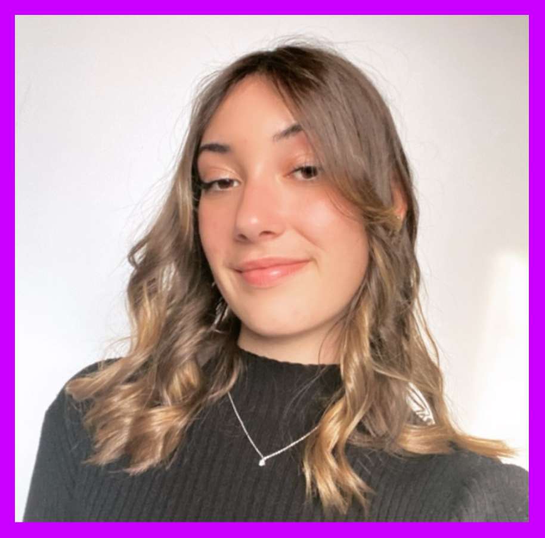

-
Hello, je m'appelle Léna Romieu
Voici quelques traits de ma personnalité :
L'organisation est ma devise. Cela me permet d'aborder chaque défi avec une redoutable efficacité. Cette rigueur est un pilier sur lequel je construis ma soif d'apprendre.
Curieuse et insatiable, j’explore constamment de nouveaux horizons pour apprendre et grandir. J'approfondis tous les sujets qui enrichissent mon savoir et me permettent de développer mes compétences.
L'humilité est une valeur qui me guide. La critique me fait avancer, je la vois comme une opportunité de grandir et de m'améliorer. Chaque avis constructif est une chance de me remettre en question, de perfectionner mon approche et d'atteindre de nouveaux sommets.
J'utilise mon temps libre pour affiner mes compétences, notamment en création de motion design grâce au logiciel After Effects. Je travaille également sur la création d'identité visuelle. Je développe aussi mes connaissances en codage & développement web.Je suis continuellement à la recherche d'amélioration et mon dynamisme et ma créativité sont au service de mon ambition : exceller dans mon domaine et contribuer positivement à chaque projet que j'entreprends.
- 